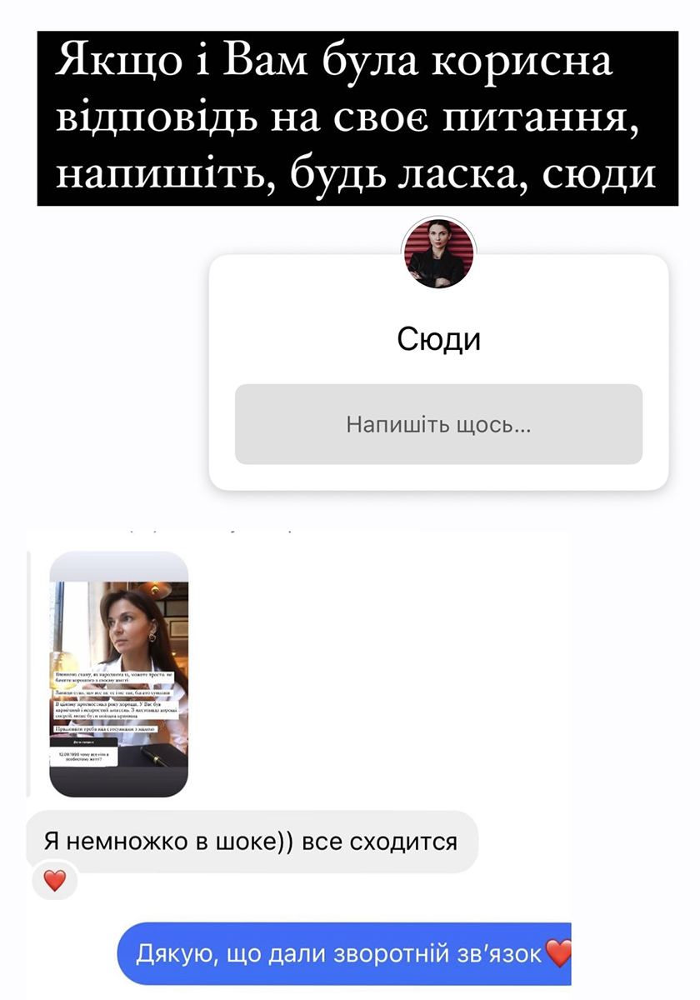
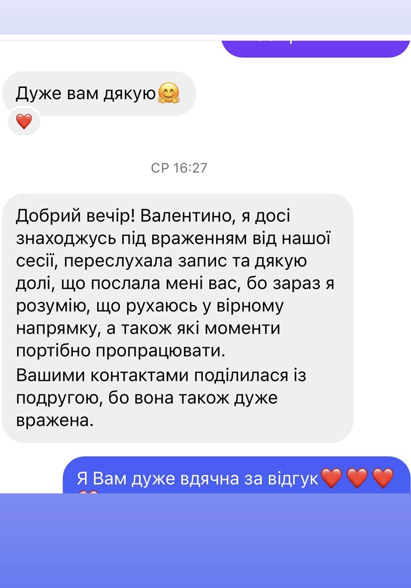
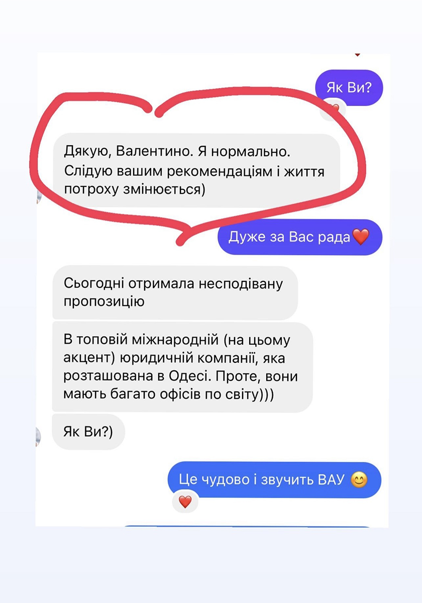

Кваліфікація та освіта
Дипломований психолог

Сімейні системні розстановки

Когнітивно-поведінкова терапія

Когнітивно-поведінкова терапія (підвищення кваліфікації)





Контакти
Зв'яжіться зі мною для запису на консультацію або дізнайтеся більше про мої послуги